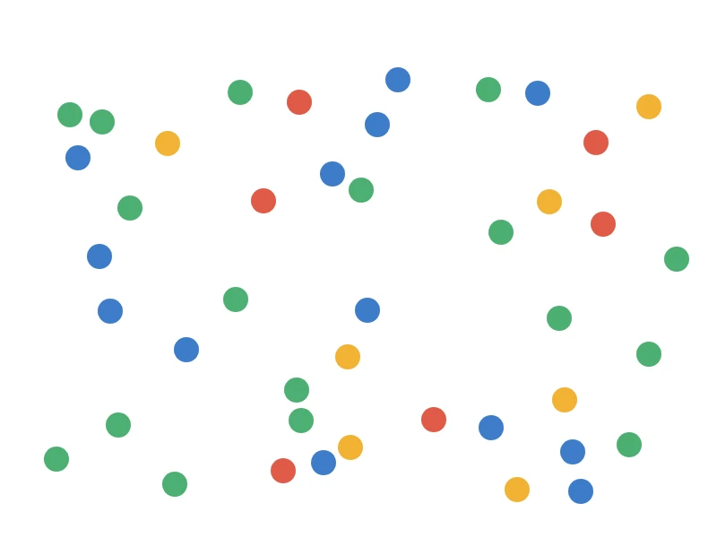
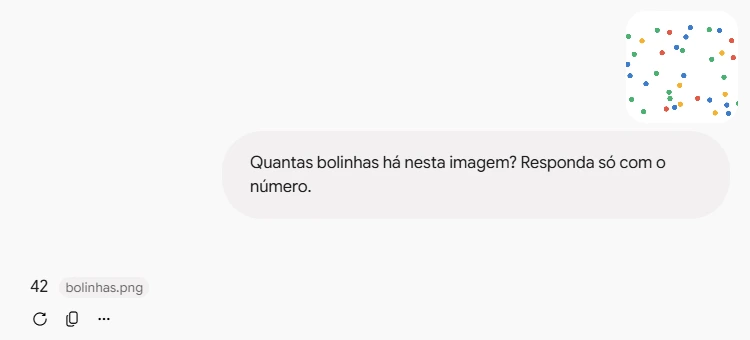

O que muda para nós e para as crianças?
Uma reflexão final sobre as mudanças que a inteligência artificial está provocando na forma de viver, trabalhar, ensinar e aprender.
Em junho de 2025, pesquisadores do MIT, o Instituto de Tecnologia de Massachusetts, publicaram um estudo que logo virou manchete: usar o ChatGPT deixaria as pessoas menos inteligentes.
As manchetes eram exageradas. Mas o estudo merece atenção, porque ajuda a entender o que a inteligência artificial está mudando no trabalho e no estudo, e o que isso significa para a escola.
A IA deixa as pessoas menos inteligentes?
Os pesquisadores pediram a 54 universitários que escrevessem redações em 20 minutos usando uma touca com sensores que registravam a atividade do cérebro. Um grupo escreveu com ajuda do ChatGPT, outro com a busca do Google e outro sem nenhuma ferramenta.
Quem escreveu com o ChatGPT teve a menor atividade cerebral dos três grupos. Os textos desse grupo saíram muito parecidos entre si, e os participantes afirmavam não se sentir tão autores da redação. Posteriormente, a maioria não conseguiu citar de memória uma única frase sequer do texto que tinha acabado de entregar.
O estudo foi feito com um grupo pequeno e, quando foi divulgado, ainda não tinha passado pela revisão de outros pesquisadores. E ele não mostrou que a IA prejudica o cérebro; mostrou que, quando a IA escreve, a pessoa se envolve menos com o texto.
Não é perda de capacidade, mas mudança de papel
Estaria comprovado, então, que usar IA nos torna menos capazes?
O ensaísta Venkatesh Rao publicou uma interpretação diferente sobre o mesmo estudo.
Para Rao, ser o redator de um texto e ser o chefe de uma redação são papéis diferentes, e envolvem habilidades diferentes.
O chefe de redação delega a tarefa, acompanha, confere o texto produzido e decide o que fica. É uma atividade diferente de escrever diretamente, e os estudantes que participaram do experimento nunca tinham aprendido a estar nesse outro papel.
Quando delegamos, algumas habilidades de execução ficam inativas, e outras entram em cena: explicar bem o que se quer, acompanhar o trabalho, revisar, perceber o que está fora do lugar e pedir de novo.
Porém, há um ponto de atenção: gerentes iniciantes e inexperientes podem não perceber os erros e não saber orientar seus liderados.
A IA é uma moda passageira?
A máquina a vapor, a eletricidade e o computador são tecnologias que, quando surgiram, não mudaram apenas uma área da sociedade, apenas uma profissão. Foram inovações que se espalharam pela economia inteira e transformaram o jeito de trabalhar em quase todas as áreas. E a IA tem todas as características de ser uma tecnologia do mesmo tipo.
A novidade é que, pela primeira vez, uma tecnologia é capaz de produzir linguagem: redigir, resumir, explicar e argumentar, tarefas que até pouco tempo só pessoas faziam. Para nós, educadores, isso afeta de um jeito especial, porque a linguagem é a matéria-prima do nosso trabalho. E ainda não dá para prever todas as consequências dessa mudança.
Capacidades irregulares
Há cerca de dois anos, os modelos de IA já eram capazes de escrever textos complexos e criativos. Mas, se você perguntasse quantas letras "p" tem a palavra "paralelepípedo", eles erravam a conta. Isso acontecia porque a IA não lê letra por letra: ela processa pedaços de palavras.
As pessoas reagiam a isso de duas formas diferentes. Algumas, impressionadas com os textos elaborados, concluíram que a IA era superior aos humanos e passaram a confiar cegamente no que ela produzia. Outras, ao ver a IA errar algo tão simples, concluíram que ela não era confiável e desde então passaram a não levá-la a sério.
Hoje em dia, o Gemini responde corretamente, sem hesitar, que paralelepípedo tem três letras p. Também é capaz de ler as horas num relógio de ponteiros, outra tarefa em que os modelos costumavam tropeçar. Mas, enquanto eu escrevia este artigo, fiz um teste: mostrei a ele uma imagem com 43 bolinhas coloridas e pedi que as contasse. Ele respondeu 42. Pedi que conferisse com cuidado. Ele separou as bolinhas por cor, somou, chegou a 37 e ainda pediu desculpas "pelo erro na primeira contagem".


Confiar cegamente e descartar como inútil são atitudes em relação à IA que, curiosamente, acontecem pelo mesmo motivo: a IA consegue fazer extraordinariamente bem coisas que consideramos difíceis e, ao mesmo tempo, pode falhar em coisas simples que uma criança conseguiria sem dificuldade.
Por que ela vai tão longe em algumas coisas?
Se a IA aprendeu com textos escritos por pessoas, como pode superar as pessoas em alguma coisa?
Um exemplo ajuda. A Olimpíada Internacional de Matemática reúne os melhores estudantes do ensino médio de mais de cem países. Em julho de 2025, uma versão do Gemini resolveu cinco dos seis problemas da prova, no mesmo tempo dado aos estudantes, escrevendo as demonstrações em linguagem comum. Fez 35 de 42 pontos, nota de medalha de ouro, conferida pelos próprios corretores da olimpíada.
A razão que explica o alto desempenho da IA é a amplitude do seu conhecimento. Nenhum matemático leu todas as soluções de todos os problemas já publicados. A IA, por sua vez, leu uma quantidade enorme delas, e por isso não resolve problemas como um estudante médio: tem à disposição o repertório de muitos estudantes. O mesmo vale entre áreas diferentes. Um especialista em Direito costuma saber pouco de Biologia, e vice-versa. A IA aprendeu sobre as duas e pode fazer conexões que o especialista de uma área, sozinho, não faria.
Mas nem todas as áreas do conhecimento permitem que a IA tenha alto desempenho. Em matemática, dá para verificar se a resposta está certa. Isso permite que a IA treine resolvendo uma quantidade enorme de problemas e recebendo, a cada tentativa, um sinal claro de acerto ou erro. É o que acontece também na programação, em que o programa funciona ou não funciona, e no xadrez, em que os computadores vencem os campeões humanos há quase trinta anos. Onde o resultado pode ser conferido com clareza, a IA avança depressa.
Onde o "certo" depende de contexto, de valores e de conhecer as pessoas, ela avança devagar. Qual é a melhor atividade para esta turma, nesta semana? Como conversar com esta família? O que esta criança quis dizer quando ficou em silêncio? Para essas perguntas não existe gabarito.
E qual o papel das pessoas nesse novo mundo do trabalho?
Em seu livro mais recente, Co-Existence (lançado em outubro de 2026, ainda sem tradução para o português), o pesquisador Ethan Mollick faz uma pergunta: como vamos conviver com máquinas que às vezes são mais inteligentes que nós?
O que a IA errava há dois anos, hoje acerta, e o que erra hoje talvez acerte no ano que vem. Por isso, não adianta decorar uma lista do que a IA não sabe fazer. Para Mollick, o ser humano leva vantagem justamente em terreno incerto. Por isso mesmo, precisamos entender como essas máquinas funcionam: onde vão bem, onde falham e quando é preciso conferir.
Se a IA assume uma parte cada vez maior da execução, crescem as tarefas que ficam conosco:
- Planejar: decidir o que fazer, para quem e por quê.
- Ler o contexto: saber o que a situação pede, coisa que a IA só sabe se alguém contar.
- Supervisionar: acompanhar o trabalho delegado e perceber quando ele saiu do rumo.
- Analisar criticamente: verificar se a resposta está correta, bem fundamentada e adequada.
- Reorientar: pedir de novo, de outro jeito, até chegar ao que se precisa.
Nenhuma dessas tarefas é nova para quem é professor. A novidade é que elas passam a ocupar o centro do trabalho de muita gente.
E as crianças?
Tudo isso vale para adultos que já sabem fazer o trabalho que delegam. Com as crianças, o desafio é diferente.
Para supervisionar, é preciso saber fazer. Só percebe o erro numa redação quem sabe escrever. Só desconfia de uma conta errada quem sabe fazer a conta. O bom gestor é alguém que, antes, aprendeu a executar.
Por isso, a IA não torna menos necessário ensinar a ler, escrever e calcular: torna mais. O que muda é o objetivo: além de aprender a produzir respostas, a criança precisa aprender a julgar respostas.
É aqui que a prova de múltipla escolha mostra seu limite. As avaliações externas, como o SAEB e o SARESP, usam questões de alternativas, e uma boa questão desse tipo pode exigir bastante raciocínio. O problema é quando a formação se resume a marcar a alternativa certa.
Fora da escola, cada vez menos situações aparecem com alternativas prontas. As crianças de hoje vão crescer num mundo em que a IA participa do trabalho e da economia e devolve respostas abertas, longas, bem escritas e às vezes erradas. Vão precisar ler essas respostas e decidir: está correta? Está bem fundamentada? Responde ao que eu precisava? O que preciso pedir de novo?
As crianças da Educação Infantil e dos anos iniciais quase não usam chatbots, que em geral exigem pelo menos 13 anos. Mas as bases dessa competência se formam agora, e muitas vezes sem tela nenhuma:
- pedir que a criança explique como chegou à resposta, e não só qual é a resposta;
- mostrar à criança duas respostas para o mesmo problema e discutir qual é melhor, e por quê;
- trazer uma resposta pronta que contém um erro e pedir que a turma o encontre;
- pedir que a turma reescreva uma resposta vaga até ela ficar clara;
- abrir espaço para a criança defender, em voz alta, o que fez.
A IA ajuda, mas a concepção pertence a você
Ao longo deste curso, delegamos à IA bilhetes, textos, imagens e tarefas que se repetem. Em todos os casos, a ideia, o critério e a decisão final ficaram com você. A execução pode ser delegada; a concepção, não.
Mas só delega bem quem sabe fazer, e só sabe fazer quem aprendeu fazendo. Formar crianças que um dia vão trabalhar ao lado de máquinas inteligentes não exige abandonar o que a escola sempre ensinou. Exige ensinar isso tudo com mais um propósito: que elas saibam reconhecer uma boa resposta quando a encontrarem, venha ela de onde vier.